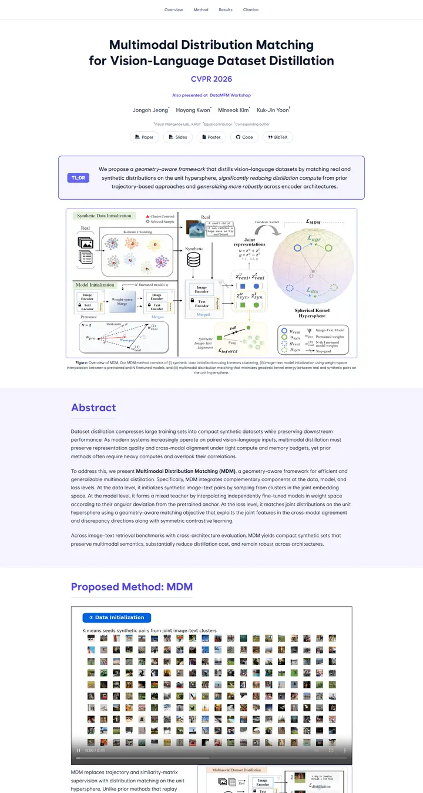

Multimodal Distribution Matching for Vision-Language Dataset Distillation
A clean seminar handout ruled in indigo ink: violet frames, a lilac band and one bold TL;DR stamp.

Checked against the rendered page. Root font size is 14.5px, so rem values are 14.5px-based.
Why it is here
A violet accent system ties it together: a bordered TL;DR callout, a tinted abstract band and outlined figure frames. Its centred hierarchy is clean, and the colour treatment adds variety to the picks.
Overview
Color Palette
Typography
Wanted Sans Variable
Multimodal Distribution Matching for Vision-Language Dataset Distillat
Abstract · Method · Results · BibTeX — 0123456789
Spacing & Shape
Page Modules
Guidelines
More like this

CRAFT: Training-Free Cascaded Retrieval for Tabular QA
A tidy product manual in pale blueprint blue, where every stage wears its own colored edge.

Efficient Self-Evaluation for Diffusion Language Models via Sequence Regeneration
A tidy stack of rounded cards washed in a blue-violet-apricot dawn, signed with a gradient wordmark.

FIGMA: Towards FIne-Grained Music retrievAl
A music journal on warm paper: a heavy Newsreader headline under a red kicker, big red serif numerals for the results, and figures resting in soft cream frames.

GuideDog: A Real-World Egocentric Multimodal Dataset for Blind and Low-Vision Accessibility-Aware Guidance
A quiet monograph page: one serif column, oxblood ink for the links, and a table that blushes only at its own row.

LaMI: Augmenting Large Language Models via Late Multi-Image Fusion
A careful conference handout: Noto Serif headings, navy outlined buttons and soft grey bands taking turns.

PairCoder++: Pair Programming as a Universal Paradigm for Verified Code-Driven Multimodal and Structured-Artifact Generation
A crisp white product page: a blue announcement strip, ink-black pill buttons and every figure on a soft-shadowed card.